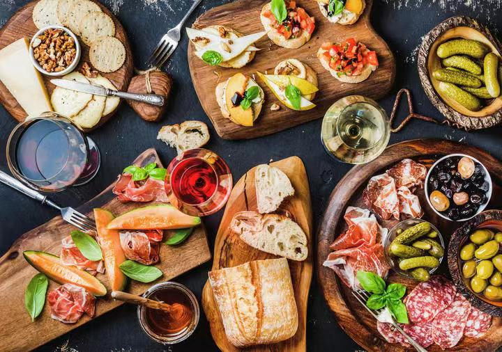

-

风景
阳江文化是岭南地域文化的一部分，其代表文化是高凉文化，又属于高阳广府文化亚区。阳江山海兼优，风光秀丽，拥有中国十大最美海岛，首批国家级海洋公园海陵岛，以“国家地质公园”凌霄岩为代表的阳春山水和宋代古沉船“南海一号”。
-

美食
阳江江城，是一个历史文化沉积深厚的城市，是文化之乡，也是美食之城。阳江是一个宜居城市，仅从阳江饮食上你就能看到阳江人对生活的热衷。尽管历史更迭、时间沉淀，富有阳江特色的小吃依然流传了下来。
阳江
阳江市，是中华人民共和国广东省地级市，地处广东省西南部，介于东经111°16′37″~112°21′51″，北纬21°28′10″~22°41′36″之间，境域东西长112.5千米，南北距132.75千米，陆地总面积7955.9平方千米，海域面积1.23万平方千米。属亚热带季风气候，海洋性气候明显。依山临海，海岸线总长度470.2千米。东部、西部和北部被群山包围。地貌主要为低山丘陵。48旅游景点以碧海银滩、溶洞峰林、江湖瀑布、历史民俗为特色；阳江市是中国优秀旅游城市，境内有国家5A级旅游景区阳江市海陵岛大角湾海上丝路旅游区。
阳江市历史源远流长。春秋战国时，为百越南境。西汉元鼎六年（公元前111年），设高凉县。隋开皇十八年（598年），设阳江县，为阳江得名之始。1988年，从江门市析出新建为阳江市，属地级市建制。截至2021年10月31日，阳江市辖2个区、1个县，代管1个县级市。市人民政府驻江城区东风二路60号。
阳江市是粤港澳大湾区向西拓展的第一座城市和直接辐射区，北部湾融入大湾区的先导区，具有承东启西的地缘经济发展优势。整体位列广东省地市GDP总量第四梯队。2021年，阳江市地区生产总值1515.86亿元，比2020年增长8.3%。
阳江文化是岭南地域文化的一部分，其代表文化是高凉文化，又属于高阳广府文化亚区。阳江山海兼优，风光秀丽，拥有中国十大最美海岛，首批国家级海洋公园海陵岛，以“国家地质公园”凌霄岩为代表的阳春山水和宋代古沉船“南海一号”。
阳江江城，是一个历史文化沉积深厚的城市，是文化之乡，也是美食之城。阳江是一个宜居城市，仅从阳江饮食上你就能看到阳江人对生活的热衷。尽管历史更迭、时间沉淀，富有阳江特色的小吃依然流传了下来。